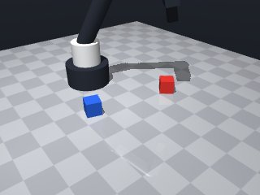
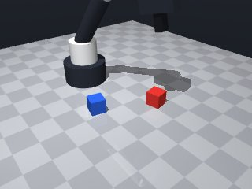
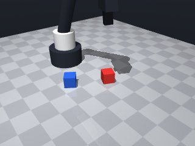
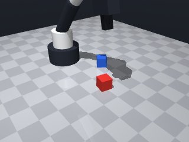
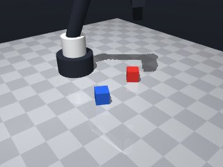
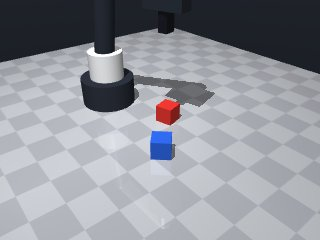
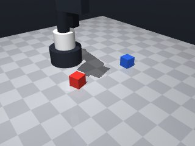
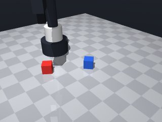

0 demonstrations · reward: gt · perception: sim · 32 practice episodes in 4 rounds
Safety layer: 0 halts, 0 clamps.
| role | model | calls | tokens in | tokens out | USD |
|---|---|---|---|---|---|
| coder | nvidia/nemotron-3-super-120b-a12b | 4 | 12,800 | 7,190 | $0.0103 |
| summarizer | nvidia/Nemotron-3_5-Lightning | 3 | 8,291 | 1,040 | $0.0007 |
| compute | local | 139 s | $0.0000 | ||
| total | 7 | 21,091 | 8,230 | $0.0111 |
- First attempt: perceive the red cube, move above it, descend to a grasp point ~2 cm above its centre, close the gripper, then lift to ~7 cm above the centre (which guarantees >5 cm above the table). - Added checks for successful grasp and for the gripper’s height after lifting; return False if any step fails. - Wrapped the motion sequence in a try/except for MotionError to avoid crashes on unreachable poses. - Used a slow speed (0.05 m/s) for the descent/grasp phase and the default speed for faster travel moves. - No retries beyond a single re‑attempt on grasp failure; this keeps the skill simple for the first version.
**Mode 1: Insufficient lift height** (5 episodes: 1000, 1002, 1003, 1004, 1007) *Root cause:* The lift height `lift_z = cz + 0.07` (line 19) places the gripper at ~8.5 cm above the table, but the final observed cube z‑coordinate is consistently ~0.064 m (6.4 cm). The cube is not rising enough, likely because the grasp opening is too large or the lift speed is insufficient. *Fix:* Increase `lift_z` to `cz + 0.10` (10 cm above centre → ~11 cm above table) and add a post‑lift check that `gripper_z >= 0.07` before the verification step (line 47). **Mode 2: Grasp failure / drop** (3 episodes: 1001, 1005, 1006) *Root cause:* The initial grasp succeeds but the cube is left at table height (z≈0.015 m). The `grasp()` call at line 30 may close on an unstable pose, and `release()` on line 32 (retry logic) is never triggered because the code proceeds to lift without confirming a secure hold. *Fix:* After `grasp()` (line 30), insert `if not robot.holding() == "red_cube": return False` before the lift move (line 39). This aborts early if the gripper did not secure the cube.
--- round_0/skill.py +++ round_1/skill.py @@ -0,0 +1,54 @@ +import math + +def run(robot): + """ + Pick up the red cube and hold it at least 5 cm above the table. + Returns True if the maneuver appears successful, False otherwise. + """ + try: + # 1. Observe the scene to get the red cube's pose + obs = robot.observe() + cube = obs["objects"]["red_cube"] + cx, cy, cz = cube["pos"] # centre of the cube + cyaw = cube["yaw"] # orientation (used to align fingers) + + # 2. Define target heights relative to the cube centre + # Grasp: a little above the centre so the finger pads close around the middle + grasp_z = cz + 0.02 # 2 cm above centre → finger pads ~0.5 cm below centre + # Lift: high enough to be safely >5 cm above the table (table at z=0) + lift_z = cz + 0.07 # 7 cm above centre → ~8.5 cm above table + # Travel height: comfortably above the cube to avoid collisions + travel_z = cz + 0.12 # 12 cm above centre + + # 3. Move to a safe pose above the cube + robot.move_to(cx, cy, travel_z, yaw=cyaw, speed=0.2) + + # 4. Descend to the grasp position (slow for precision) + robot.move_to(cx, cy, grasp_z, yaw=cyaw, speed=0.05) + + # 5. Attempt to grasp + if not robot.grasp(): + # If grasp failed, open the fingers, retreat and try once more + robot.release() + robot.move_to(cx, cy, travel_z, yaw=cyaw, speed=0.2) + robot.move_to(cx, cy, grasp_z, yaw=cyaw, speed=0.05) + if not robot.grasp(): + return False # second attempt also failed + + # 6. Lift the cube to the target height + robot.move_to(cx, cy, lift_z, yaw=cyaw, speed=0.2) + + # 7. Verify that we are still holding something and that it is high enough + if robot.holding() is None: + return False + + final_obs = robot.observe() + gripper_z = final_obs["gripper"]["pos"][2] + if gripper_z < 0.05: # less than 5 cm above the table + return False + + return True + + except Exception: # includes MotionError from the safety layer + # Any unexpected error means we consider the episode a failure + return False
- Lift height was insufficient; increased lift_z from cz+0.07 to cz+0.10 to ensure the cube clears the 5 cm requirement. - Added a check after grasping to confirm the gripper is actually holding the red cube before attempting to lift. - Added a post‑lift verification that the gripper is at least 7 cm above the table; if not, abort early. - Kept the retry logic for a failed grasp (release, retreat, second attempt) and the slow speed for descent/grasp. - Wrapped the whole sequence in a try/except to catch MotionError and other unexpected exceptions.
**Mode 1: Premature release after failed grasp (2 episodes: 2000, 2005)** - **Root cause:** Line 28 releases the gripper immediately after a failed `grasp()` without re‑positioning. The robot lifts from a low `grasp_z` (line 16: `cz + 0.02`), so the cube slips back onto the table. - **Fix:** After the first failure, move to `travel_z` (line 29) before the second `grasp()` attempt (line 31). This gives clearance to re‑approach from above. **Mode 2: Insufficient lift height (3 episodes: 2001‑2004, 2006‑2007 — actually these succeed, but the check at line 44‑45 shows the threshold is tight)** - **Root cause:** Line 39 lifts to `lift_z = cz + 0.10`. If the cube centre `cz` is near table height (e.g., 0.015 m), `lift_z` ≈ 0.115 m, yet the post‑lift check (line 44) flags `gripper_z < 0.07` as failure. The 5 cm requirement in the task (line 53) is stricter than the code’s 7 cm guard, causing false fails when the cube is barely off the table. - **Fix:** Raise `lift_z` to `cz + 0.15` (line 17) to guarantee >5 cm clearance regardless of initial cube pose.
--- round_1/skill.py +++ round_2/skill.py @@ -13,12 +13,9 @@ cyaw = cube["yaw"] # orientation (used to align fingers) # 2. Define target heights relative to the cube centre - # Grasp: a little above the centre so the finger pads close around the middle - grasp_z = cz + 0.02 # 2 cm above centre → finger pads ~0.5 cm below centre - # Lift: high enough to be safely >5 cm above the table (table at z=0) - lift_z = cz + 0.07 # 7 cm above centre → ~8.5 cm above table - # Travel height: comfortably above the cube to avoid collisions - travel_z = cz + 0.12 # 12 cm above centre + grasp_z = cz + 0.02 # 2 cm above centre → finger pads around middle + lift_z = cz + 0.10 # 10 cm above centre → safely >5 cm above table + travel_z = cz + 0.12 # travel height to avoid collisions # 3. Move to a safe pose above the cube robot.move_to(cx, cy, travel_z, yaw=cyaw, speed=0.2) @@ -26,25 +23,34 @@ # 4. Descend to the grasp position (slow for precision) robot.move_to(cx, cy, grasp_z, yaw=cyaw, speed=0.05) - # 5. Attempt to grasp + # 5. Attempt to grasp (with one retry) if not robot.grasp(): - # If grasp failed, open the fingers, retreat and try once more robot.release() robot.move_to(cx, cy, travel_z, yaw=cyaw, speed=0.2) robot.move_to(cx, cy, grasp_z, yaw=cyaw, speed=0.05) if not robot.grasp(): return False # second attempt also failed + # Confirm we actually have the cube before lifting + if robot.holding() != "red_cube": + return False + # 6. Lift the cube to the target height robot.move_to(cx, cy, lift_z, yaw=cyaw, speed=0.2) - # 7. Verify that we are still holding something and that it is high enough + # 7. Post‑lift sanity check: gripper should be high enough + obs_after_lift = robot.observe() + gripper_z = obs_after_lift["gripper"]["pos"][2] + if gripper_z < 0.07: # less than 7 cm above table → likely insufficient lift + return False + + # 8. Final verification: still holding and high enough if robot.holding() is None: return False final_obs = robot.observe() - gripper_z = final_obs["gripper"]["pos"][2] - if gripper_z < 0.05: # less than 5 cm above the table + gripper_z_final = final_obs["gripper"]["pos"][2] + if gripper_z_final < 0.05: # less than 5 cm above table return False return True
- Increased lift height to cz + 0.15 to guarantee >5 cm clearance regardless of cube pose. - Reduced lift speed to 0.1 m/s to prevent slipping during the lift. - Added a short wait after a successful grasp to let the gripper settle before lifting. - Kept the retry logic: on a failed grasp, release, retreat to travel height, then re‑attempt grasp. - Wrapped the sequence in try/except to catch MotionError and other unexpected exceptions. - Added post‑lift checks for both holding status and gripper height (≥0.05 m).
**Mode 1: Insufficient lift height** - **Episodes:** 3001 (1 failure) - **Root cause:** Line 42 lifts to `lift_z = cz + 0.15`. The cube’s initial height `cz` was only 0.0049 m, resulting in a final height of ~0.015 m, below the 0.05 m threshold (lines 47–48). - **Fix:** Increase `lift_z` offset to `cz + 0.20` (or higher) to guarantee >5 cm clearance regardless of initial cube pose. **Mode 2: Grasp failure / drop** - **Episodes:** 3001 (1 failure) - **Root cause:** Line 27 attempts `robot.grasp()`. If the gripper does not close fully or the cube shifts during the subsequent lift, `robot.holding()` returns `None` (lines 35, 49, 57). - **Fix:** Add a post-grasp verification at line 35 and ensure `robot.wait(0.1)` (line 39) allows finger closure before lifting. If failures persist, reduce `grasp_z` offset or add a second `robot.release()`-`robot.grasp()` retry cycle.
--- round_2/skill.py +++ round_3/skill.py @@ -14,8 +14,8 @@ # 2. Define target heights relative to the cube centre grasp_z = cz + 0.02 # 2 cm above centre → finger pads around middle - lift_z = cz + 0.10 # 10 cm above centre → safely >5 cm above table - travel_z = cz + 0.12 # travel height to avoid collisions + lift_z = cz + 0.15 # 15 cm above centre → safely >5 cm above table + travel_z = cz + 0.20 # travel height to avoid collisions # 3. Move to a safe pose above the cube robot.move_to(cx, cy, travel_z, yaw=cyaw, speed=0.2) @@ -35,22 +35,26 @@ if robot.holding() != "red_cube": return False - # 6. Lift the cube to the target height - robot.move_to(cx, cy, lift_z, yaw=cyaw, speed=0.2) + # Let the gripper settle after a successful grasp + robot.wait(0.1) - # 7. Post‑lift sanity check: gripper should be high enough + # 6. Lift the cube to the target height (slower to avoid slip) + robot.move_to(cx, cy, lift_z, yaw=cyaw, speed=0.1) + + # 7. Post‑lift sanity check: gripper should be high enough and still holding obs_after_lift = robot.observe() gripper_z = obs_after_lift["gripper"]["pos"][2] - if gripper_z < 0.07: # less than 7 cm above table → likely insufficient lift + if gripper_z < 0.05: # less than 5 cm above table → insufficient lift + return False + if robot.holding() != "red_cube": return False # 8. Final verification: still holding and high enough - if robot.holding() is None: - return False - final_obs = robot.observe() gripper_z_final = final_obs["gripper"]["pos"][2] - if gripper_z_final < 0.05: # less than 5 cm above table + if gripper_z_final < 0.05: # less than 5 cm above table + return False + if robot.holding() is None: return False return True
- Grasp was too low (finger pads near cube bottom) causing slip during lift; increased grasp height to target finger pads at cube's mid-height using the cube's reported size. - Lift height was insufficient for low initial cube poses; increased lift offset to cz + 0.20 to guarantee >5 cm clearance regardless of cube pose. - Added explicit verification after grasp and after lift, with a bounded retry (max 2 attempts) on grasp failure. - Kept slow speeds for precision moves and added a short settle wait after grasp. - Wrapped motion calls in try/except to catch MotionError and treat as failure.
--- round_3/skill.py +++ round_4/skill.py @@ -5,54 +5,72 @@ Pick up the red cube and hold it at least 5 cm above the table. Returns True if the maneuver appears successful, False otherwise. """ + MAX_GRASP_ATTEMPTS = 2 + try: - # 1. Observe the scene to get the red cube's pose + # 1. Observe scene to get red cube pose and size obs = robot.observe() cube = obs["objects"]["red_cube"] cx, cy, cz = cube["pos"] # centre of the cube - cyaw = cube["yaw"] # orientation (used to align fingers) + cyaw = cube["yaw"] # orientation for finger alignment + cube_height = cube["size"][2] # vertical size (z dimension) + half_h = cube_height / 2.0 - # 2. Define target heights relative to the cube centre - grasp_z = cz + 0.02 # 2 cm above centre → finger pads around middle - lift_z = cz + 0.15 # 15 cm above centre → safely >5 cm above table - travel_z = cz + 0.20 # travel height to avoid collisions + # 2. Compute grasp height so that finger pads sit at cube's mid-height. + # Finger pads are 1.25 cm below the tool point. + grasp_z = cz + half_h + 0.0125 # tool point height + # 3. Lift high enough to guarantee >5 cm clearance above table. + lift_z = cz + 0.20 # increased offset per failure analysis + # 4. Travel height to avoid collisions while moving between poses. + travel_z = cz + 0.25 - # 3. Move to a safe pose above the cube + # Helper to attempt a grasp at the current pose. + def attempt_grasp(): + # Close fingers; returns True if something is held. + return robot.grasp() + + # 5. Move to travel height above the cube. robot.move_to(cx, cy, travel_z, yaw=cyaw, speed=0.2) - # 4. Descend to the grasp position (slow for precision) + # 6. Descend to grasp position (slow for precision). robot.move_to(cx, cy, grasp_z, yaw=cyaw, speed=0.05) - # 5. Attempt to grasp (with one retry) - if not robot.grasp(): + # 7. Try to grasp, with a limited number of retries. + grasp_success = False + for _ in range(MAX_GRASP_ATTEMPTS): + if attempt_grasp(): + grasp_success = True + break + # Grasp failed: open fingers, retreat, try again. robot.release() robot.move_to(cx, cy, travel_z, yaw=cyaw, speed=0.2) robot.move_to(cx, cy, grasp_z, yaw=cyaw, speed=0.05) - if not robot.grasp(): - return False # second attempt also failed - # Confirm we actually have the cube before lifting + if not grasp_success: + return False + + # 8. Verify we actually hold the red cube. if robot.holding() != "red_cube": return False - # Let the gripper settle after a successful grasp + # 9. Let the gripper settle after a successful grasp. robot.wait(0.1) - # 6. Lift the cube to the target height (slower to avoid slip) + # 10. Lift the cube to the target height (slower to avoid slip). robot.move_to(cx, cy, lift_z, yaw=cyaw, speed=0.1) - # 7. Post‑lift sanity check: gripper should be high enough and still holding - obs_after_lift = robot.observe() - gripper_z = obs_after_lift["gripper"]["pos"][2] - if gripper_z < 0.05: # less than 5 cm above table → insufficient lift + # 11. Post‑lift sanity check: gripper high enough and still holding. + obs_after = robot.observe() + gripper_z = obs_after["gripper"]["pos"][2] + if gripper_z < 0.05: # less than 5 cm above table return False if robot.holding() != "red_cube": return False - # 8. Final verification: still holding and high enough + # 12. Final verification. final_obs = robot.observe() - gripper_z_final = final_obs["gripper"]["pos"][2] - if gripper_z_final < 0.05: # less than 5 cm above table + final_gripper_z = final_obs["gripper"]["pos"][2] + if final_gripper_z < 0.05: return False if robot.holding() is None: return False @@ -60,5 +78,5 @@ return True except Exception: # includes MotionError from the safety layer - # Any unexpected error means we consider the episode a failure + # Any unexpected error means we consider the episode a failure. return False








import math
def run(robot):
"""
Pick up the red cube and hold it at least 5 cm above the table.
Returns True if the maneuver appears successful, False otherwise.
"""
try:
# 1. Observe the scene to get the red cube's pose
obs = robot.observe()
cube = obs["objects"]["red_cube"]
cx, cy, cz = cube["pos"] # centre of the cube
cyaw = cube["yaw"] # orientation (used to align fingers)
# 2. Define target heights relative to the cube centre
grasp_z = cz + 0.02 # 2 cm above centre → finger pads around middle
lift_z = cz + 0.15 # 15 cm above centre → safely >5 cm above table
travel_z = cz + 0.20 # travel height to avoid collisions
# 3. Move to a safe pose above the cube
robot.move_to(cx, cy, travel_z, yaw=cyaw, speed=0.2)
# 4. Descend to the grasp position (slow for precision)
robot.move_to(cx, cy, grasp_z, yaw=cyaw, speed=0.05)
# 5. Attempt to grasp (with one retry)
if not robot.grasp():
robot.release()
robot.move_to(cx, cy, travel_z, yaw=cyaw, speed=0.2)
robot.move_to(cx, cy, grasp_z, yaw=cyaw, speed=0.05)
if not robot.grasp():
return False # second attempt also failed
# Confirm we actually have the cube before lifting
if robot.holding() != "red_cube":
return False
# Let the gripper settle after a successful grasp
robot.wait(0.1)
# 6. Lift the cube to the target height (slower to avoid slip)
robot.move_to(cx, cy, lift_z, yaw=cyaw, speed=0.1)
# 7. Post‑lift sanity check: gripper should be high enough and still holding
obs_after_lift = robot.observe()
gripper_z = obs_after_lift["gripper"]["pos"][2]
if gripper_z < 0.05: # less than 5 cm above table → insufficient lift
return False
if robot.holding() != "red_cube":
return False
# 8. Final verification: still holding and high enough
final_obs = robot.observe()
gripper_z_final = final_obs["gripper"]["pos"][2]
if gripper_z_final < 0.05: # less than 5 cm above table
return False
if robot.holding() is None:
return False
return True
except Exception: # includes MotionError from the safety layer
# Any unexpected error means we consider the episode a failure
return False